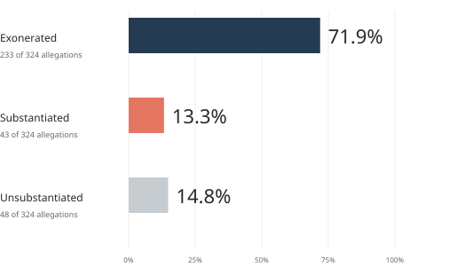
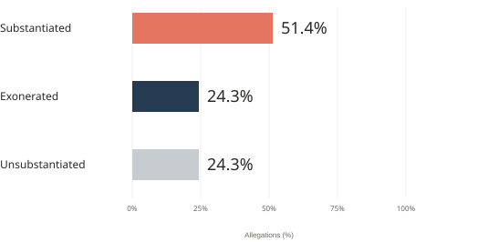
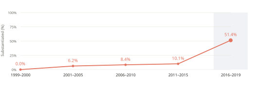

One Dataset, Two Perspectives
Proposition: NYPD pepper-spray allegations were usually ruled permissible.
Permissible means the conduct occurred but was allowed under NYPD rules.
NYPD Pepper-Spray Allegations Were Usually Ruled Permissible
Among allegations received in 1999–2019, 71.9% were exonerated.

Source: ProPublica / NYC Civilian Complaint Review Board (CCRB), July 2020
Design Decisions And Rationale
−2 = fully deceptive; +2 = fully earnest.
Pool All Received Years -1
Combining 1999–2019 emphasizes the 71.9% historical majority. Pooling the years obscures differences between periods, including the recent reversal.
Keep A Shared Baseline And Full Scale +2
All bars start at zero and use a 0%–100% scale. Their lengths can be compared without exaggerating differences through axis truncation.
Lead With Exoneration +1
Placing exoneration first directs attention toward the majority finding that supports the proposition. The navy bar and large percentage make that outcome prominent.
Show All Outcomes And Counts +2
Including substantiated and unsubstantiated allegations keeps competing outcomes visible. Counts clarify what the percentages represent.
Pair The Persuasive Title With A Definition +1
“Ruled permissible” makes the finding understandable, while the definition clarifies what exoneration means under NYPD rules. Referring to allegations limits the claim to the records analyzed.
In 2016–2019, Pepper-Spray Allegations Were Substantiated More Often Than Exonerated
51.4% were substantiated, compared with 24.3% exonerated.

Substantiation Increased In The Latest Period

Source: ProPublica / NYC Civilian Complaint Review Board (CCRB), July 2020
Design Decisions And Rationale
−2 = fully deceptive; +2 = fully earnest.
Compare Recent Findings Directly +1
Showing the recent outcomes together makes the contrast clear: 51.4% of allegations were substantiated, while 24.3% were exonerated and another 24.3% were unsubstantiated.
Emphasize A Selected Recent Period -1.5
The headline and main chart focus on 2016–2019, when substantiated allegations were more common than exonerated allegations. However, the broader 2010–2019 period shows the opposite ordering: 61.7% were exonerated, compared with 18.0% substantiated. This shows how selecting a time period can change the overall impression.
Keep The Full Scale And Consistent Denominator +2
Each bar shows the percentage of allegations in an outcome category, while the trend chart shows the percentage that were substantiated. Both use all pepper-spray allegations in the relevant period as the denominator, including unsubstantiated findings, and keep the scale from 0% to 100% to support fair comparisons.
Group Years Into Unequal Periods -0.5
Some years have few records, so grouping years makes the chart easier to read. However, periods of different lengths are spaced equally on the chart. Connecting the points with a line makes the data look continuous, even though the slopes do not represent yearly rates of change.
Omit Sample Counts From The Chart Face -1
Showing dates and percentages without counts keeps the focus on differences between outcomes and makes the small recent sample of 37 allegations from 22 complaints less noticeable. The sample sizes and the fact that multiple allegations can come from the same complaint are still explained in the Methods section and reflection.
Team reflection
What The Two Views Reveal
The main design choice was aggregation. Using all the available years, the exonerated majority is 71.9%, while the latest period has a 51.4% substantiated share. Both figures are correct, but the titles and the way they are presented can lead to different conclusions. The recent findings challenge the use of the historical average to describe every period, but they do not disprove that average.
The feedback on the project also raised concerns about relying on just 37 recent allegations. These allegations came from 22 complaints, and two complaints account for 10 of the 19 substantiated allegations. Looking at the complaints instead, 10 had substantiated pepper-spray findings, while 7 had exonerated findings. Substantiated findings still rank higher, but they do not make up a majority of complaints. The broader 2010–2019 period also shows a different picture, with 61.7% of allegations exonerated. This makes the choice to focus on the recent period an important ethical concern, rather than a limitation that can be fixed through better design.
For this project, ethical persuasion means presenting accurate numbers while making it clear what they cover, how findings are defined, and why certain periods were selected. The presentation becomes misleading when readers are encouraged to apply recent results to the entire history, assume the selected complaints represent every use of force, or treat administrative findings as if they automatically led to punishment. Clear axes and visible sources are important, but they cannot fully prevent these misunderstandings.
Methods And Limitations
The original CSV was filtered to include only allegations labeled Pepper spray, leaving 324 records. Mace is listed separately and was not included. All “Substantiated (…)” outcomes were grouped together. Percentages were calculated using the total number of allegations in each group, including unsubstantiated findings.
The five received-year periods contain 7, 64, 107, 109, and 37 allegations, respectively. The records span 1999–2019. The periods are spaced evenly on the horizontal axis to show their order, not equal lengths of time or annual changes. The most recent period contains 37 allegations from just 22 complaints, and multiple records may involve the same complaint or officer.
The results change depending on the time period and how the records are counted. From 2010 to 2019, there were 167 allegations, with 61.7% exonerated and 18.0% substantiated. From 2015 to 2019, 41.1% were substantiated and 39.3% were exonerated. However, this ordering reverses when complaints are weighted equally instead of counting each allegation separately. In the 2016–2019 period, 10 of 22 complaints had substantiated pepper-spray findings, compared with 7 that had exonerated findings. Two complaints account for 10 of the 19 recent substantiated allegations.
The dataset also has limitations. It includes officers who were still serving in June 2020 and had at least one substantiated allegation. It covers closed, investigated cases and excludes findings classified as unfounded. Recent cases that were still unresolved at the time of the release are not represented. Apparent duplicate rows were retained because there is no unique allegation ID to confirm whether they are errors.
Unsubstantiated means investigators could not establish both that the conduct occurred and that it violated NYPD rules. Exonerated does not mean a complaint was false, and substantiated does not necessarily mean disciplinary action followed. The analysis does not establish causation or actual punishment.